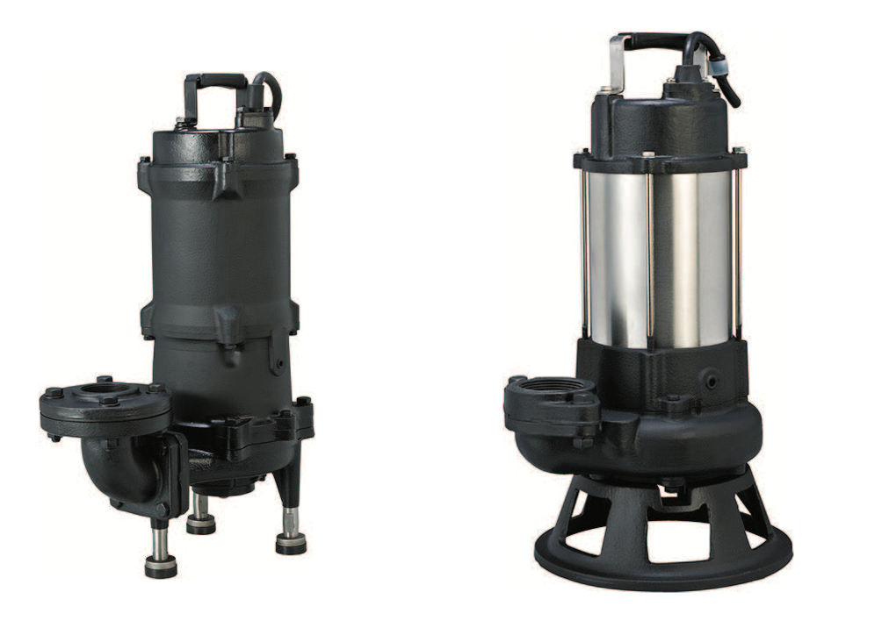

What Are Sewage Grinder Pump Systems and Cutter Pumps?
/wp:heading wp:paragraphGrinder and cutter pumps are critical components of modern sewage management systems. Both are used to break down solids in wastewater before discharge, preventing pipe blockages and equipment damage. While similar in purpose, their cutting mechanisms, use cases, and performance differ—making it essential to choose the right pump for your sewage tank setup.
/wp:paragraph wp:paragraphKey Takeaways:
/wp:paragraph wp:list {"ordered":true}- wp:list-item
- Grinder pump systems are ideal for heavy-duty sewage applications—grinding solids into fine slurry and allowing the use of small-diameter pipes. /wp:list-item wp:list-item
- Cutter pumps offer an energy-efficient alternative for domestic wastewater systems by slicing solids into smaller pieces, though not as finely as grinders. /wp:list-item wp:list-item
- Choosing the right pump depends on the waste type, pipe size, and system demands—grinders suit tougher commercial tasks; cutters are better for light-to-moderate residential use. /wp:list-item
Why Would You Need a Cutter or Grinder Pump?
/wp:heading wp:paragraphCutters and grinders are used to break down solids in wastewater. This includes toilet paper as well as a growing number of “flushable” household cleaning products like paper towels, wet wipes, and scrubbing pads among other items that could otherwise cause damage to the pipes and pumps in the sewage system or lead to blockages.
/wp:paragraph wp:headingCutter Pumps
/wp:heading wp:paragraphCutter pumps typically use a sharpened, tungsten carbide cutting blade attached to the impeller to cut solid objects into more manageable pieces. They are designed to deal with a variety of flushable or other materials that end up in wastewater such as smaller fabric rags, plastics, and flushable cleaning products, cutting larger items down to around 25mm pieces for easier pumping and discharge. They are an energy-efficient, lower-cost solution best suited to domestic sewage applications.
/wp:paragraph wp:headingGrinder Pumps
/wp:heading wp:paragraphGrinder pumps are a more complex, more heavy-duty pump. The mechanism they use is a grinding, (typically stainless steel) cutting blade that rotates inside a cutting ring equipped with multiple teeth. This grinds solid, fibrous matter down into much smaller parts than would be possible with a cutter pump, meaning they can be used with smaller-diameter pipes. Grinder pumps are typically installed at the main source of supply to the sewage system, and they can handle a broader variety of materials than cutter pumps, such as larger fabric rags, rope, and cord, some of the toughest, most problematic material to find its way into sewage systems.
/wp:paragraph wp:heading {"level":3}Cutter Pumps vs Grinder Pumps
/wp:heading wp:table {"className":"is-style-stripes"}| Feature / Function | Grinder Pump | Cutter Pump |
|---|---|---|
| Function | Grinds solid waste into fine slurry | Cuts solids into smaller, manageable chunks |
| Cutting Mechanism | Rotating stainless steel blade inside a toothed cutting ring | Tungsten carbide blade attached to impeller |
| Typical Use Case | Commercial, industrial, or high-demand sewage systems | Domestic or light-duty wastewater applications |
| Materials Handled | Tough solids like large rags, rope, and fibrous waste | Soft solids, toilet paper, wipes, and flushable cleaning items |
| Discharge Pipe Size Compatibility | Suitable for small-diameter piping due to fine slurry output | Requires standard pipe sizes due to coarser output |
| Energy Usage | Higher (more powerful grinding action) | Lower (energy-efficient design) |
| Installation Location | At the sewage source or central collection point | Commonly used closer to discharge points |
| Cost | Higher initial and running costs | Lower upfront and operational costs |
| Best For | Facilities with frequent tough waste or long pipe runs | Homes or small buildings with light to moderate waste loads |
Which One is Best?
/wp:heading wp:paragraphAs with any engineering decision, the pump you use will depend on the specifics of the job. Overall, grinder pumps are better able than cutters to reliably break down tougher materials found in wastewater, and for this reason they are more commonly used in commercial settings. If lots of tough waste material frequently passes through your sewage system, a grinder pump is going to be a better option than a cutter. However, the greater cutting power of grinder pumps is not without its costs. Grinders use more energy than cutters and are therefore more expensive to run and more environmentally taxing.
/wp:paragraph wp:headingWhy Choose Aline Pumps?
/wp:heading wp:paragraphAline Pumps has been providing high-quality, customer-focussed solutions to the Australian plumbing, building, and fire protection markets since 1995. Today, we are Australia’s leading manufacturer of fire protection pumping solutions to residential, commercial, and industrial markets.
/wp:paragraph wp:headingContact Aline Pumps Today
/wp:heading wp:paragraphFor information on our range of cutter and grinder pumps or to speak to one of our expert team members about the requirements of your next project, head to the contact section of our website and get in touch by phone or email.
/wp:paragraph wp:paragraph /wp:paragraph